In brief
Blizzard announced over 600 new recipes without publishing a complete list. This page gathers the 508 Leatherworking recipes recorded in the game files (client 1.60.1.70862, consulted on 12 November 2026). Names and required skills come from the game files. An acquisition marked “unknown” remains to be confirmed. Tables are grouped by required skill bracket. When acquisition, source or zone is not given in the data consulted, the cell says so. No drop rates are repeated; none were given.[1][2][4][3]
Key points
- 508 Leatherworking recipes listed below, from the game files (client 1.60.1.70862, 12 November 2026); acquisition marked “unknown” remains to be confirmed.[4] Game data (client 1.60.1.70862)
- Acquisition given in the game files: trainer 94, drop 17, quest 12, reputation 62, unknown 323.[4] Game data (client 1.60.1.70862)
- Blizzard has not published the complete recipe list, nor trainers, vendors, prices or drop rates.[1][2]
- Reagents of 508 recipes and 158 materials linked to their “where to find it” card (game files).[5] Game data (client 1.60.1.70862)
How to read this list
This list is not official. Blizzard has not published the details of this profession’s recipes (vendors, trainers, monsters, zones, prices, drop rates). The names and skills below come from the game files (client 1.60.1.70862). An acquisition marked “unknown” remains to be confirmed. The French name is the in-game localization when one was found; otherwise the English name is used in both languages. “Trainer” also covers recipes listed as learned automatically with the profession. An overview page already online, Recipes and advanced blueprints (/en/professions/recipes-and-advanced-blueprints/), restates the official acquisition rules and the lootable recipes already shown by zone.[1][2][4][3]
Skill 1–75 — 80 recipes (game data)
| Recipe | Required skill | How obtained | Source | Zone | Status |
|---|---|---|---|---|---|
| Camp Tent | 1 | trainer | profession trainer (unnamed) | not recorded | game data |
| Handstitched Leather Boots | 1 | trainer | learned automatically with the profession | not recorded | game data |
| Handstitched Leather Bracers | 1 | trainer | learned automatically with the profession | not recorded | game data |
| Handstitched Leather Cloak | 1 | trainer | learned automatically with the profession | not recorded | game data |
| Handstitched Leather Vest | 1 | trainer | learned automatically with the profession | not recorded | game data |
| Light Armor Kit | 1 | trainer | learned automatically with the profession | not recorded | game data |
| Light Leather | 1 | trainer | learned automatically with the profession | not recorded | game data |
| Light Leather Reagent Bag | 30 | quest | Beasts of Thunder Ridge | not recorded | game data |
| Rugged Leather Pants | 30 | unknown | not recorded | not recorded | game data — acquisition to be confirmed |
| Black Whelp Slippers | 35 | unknown | not recorded | not recorded | game data — acquisition to be confirmed |
| Dark Leather Boots | 35 | unknown | not recorded | not recorded | game data — acquisition to be confirmed |
| Kodo Hide Bag | 35 | quest | Kodo Hide Bag | not recorded | game data |
| Moonglow Boots | 35 | unknown | not recorded | not recorded | game data — acquisition to be confirmed |
| Murloc Scale Shoes | 35 | unknown | not recorded | not recorded | game data — acquisition to be confirmed |
| Handstitched Leather Pants | 37 | trainer | profession trainer (unnamed) | not recorded | game data |
| White Leather Jerkin | 40 | unknown | not recorded | not recorded | game data — acquisition to be confirmed |
| Cured Light Hide | 45 | trainer | profession trainer (unnamed) | not recorded | game data |
| Handstitched Leather Belt | 47 | trainer | profession trainer (unnamed) | not recorded | game data |
| Light Leather Quiver | 47 | trainer | profession trainer (unnamed) | not recorded | game data |
| Small Leather Ammo Pouch | 47 | trainer | profession trainer (unnamed) | not recorded | game data |
| Azure Gustwoven Belt | 50 | reputation | Nightclaw Druids (Friendly) | not recorded | game data |
| Azure Gustwoven Bracers | 50 | reputation | Nightclaw Druids (Friendly) | not recorded | game data |
| Azure Windraveled Armguards | 50 | reputation | Nightclaw Druids (Friendly) | not recorded | game data |
| Azure Windraveled Strap | 50 | reputation | Nightclaw Druids (Friendly) | not recorded | game data |
| Cloudy Gustwoven Belt | 50 | reputation | Nightclaw Druids (Friendly) | not recorded | game data |
| Cloudy Gustwoven Bracers | 50 | reputation | Nightclaw Druids (Friendly) | not recorded | game data |
| Cloudy Windraveled Armguards | 50 | reputation | Nightclaw Druids (Friendly) | not recorded | game data |
| Cloudy Windraveled Strap | 50 | reputation | Nightclaw Druids (Friendly) | not recorded | game data |
| Fine Leather Gloves | 50 | unknown | not recorded | not recorded | game data — acquisition to be confirmed |
| Azure Gustwoven Boots | 55 | reputation | Nightclaw Druids (Friendly) | not recorded | game data |
| Azure Gustwoven Gloves | 55 | reputation | Nightclaw Druids (Friendly) | not recorded | game data |
| Azure Windraveled Footwraps | 55 | reputation | Nightclaw Druids (Friendly) | not recorded | game data |
| Azure Windraveled Mitts | 55 | reputation | Nightclaw Druids (Friendly) | not recorded | game data |
| Cloudy Gustwoven Boots | 55 | reputation | Nightclaw Druids (Friendly) | not recorded | game data |
| Cloudy Gustwoven Gloves | 55 | reputation | Nightclaw Druids (Friendly) | not recorded | game data |
| Cloudy Windraveled Footwraps | 55 | reputation | Nightclaw Druids (Friendly) | not recorded | game data |
| Cloudy Windraveled Mitts | 55 | reputation | Nightclaw Druids (Friendly) | not recorded | game data |
| Embossed Leather Vest | 57 | trainer | profession trainer (unnamed) | not recorded | game data |
| Azure Gustwoven Harness | 60 | reputation | Nightclaw Druids (Honored) | not recorded | game data |
| Azure Gustwoven Trousers | 60 | reputation | Nightclaw Druids (Honored) | not recorded | game data |
| Azure Windraveled Jerkin | 60 | reputation | Nightclaw Druids (Honored) | not recorded | game data |
| Azure Windraveled Pants | 60 | reputation | Nightclaw Druids (Honored) | not recorded | game data |
| Brawler's Leather Belt | 60 | unknown | not recorded | not recorded | game data — acquisition to be confirmed |
| Cloudy Gustwoven Harness | 60 | reputation | Nightclaw Druids (Honored) | not recorded | game data |
| Cloudy Gustwoven Trousers | 60 | reputation | Nightclaw Druids (Honored) | not recorded | game data |
| Cloudy Windraveled Jerkin | 60 | reputation | Nightclaw Druids (Honored) | not recorded | game data |
| Cloudy Windraveled Pants | 60 | reputation | Nightclaw Druids (Honored) | not recorded | game data |
| Defender's Leather Belt | 60 | unknown | not recorded | not recorded | game data — acquisition to be confirmed |
| Stormrider's Leather Belt | 60 | unknown | not recorded | not recorded | game data — acquisition to be confirmed |
| Totemic Leather Belt | 60 | unknown | not recorded | not recorded | game data — acquisition to be confirmed |
| Trapper's Leather Belt | 60 | unknown | not recorded | not recorded | game data — acquisition to be confirmed |
| Wisdom's Leather Belt | 60 | unknown | not recorded | not recorded | game data — acquisition to be confirmed |
| Embossed Leather Cloak | 62 | trainer | profession trainer (unnamed) | not recorded | game data |
| Embossed Leather Gloves | 62 | trainer | profession trainer (unnamed) | not recorded | game data |
| Fine Leather Cloak | 62 | trainer | profession trainer (unnamed) | not recorded | game data |
| Deviate Scale Cloak | 65 | unknown | not recorded | not recorded | game data — acquisition to be confirmed |
| Fine Leather Boots | 65 | unknown | not recorded | not recorded | game data — acquisition to be confirmed |
| Moonglow Vest | 65 | quest | Moonglow Vest | not recorded | game data |
| Murloc Scale Belt | 65 | unknown | not recorded | not recorded | game data — acquisition to be confirmed |
| Light Leather Bracers | 67 | trainer | profession trainer (unnamed) | not recorded | game data |
| Medium Leather | 70 | trainer | profession trainer (unnamed) | not recorded | game data |
| Murloc Scale Breastplate | 70 | unknown | not recorded | not recorded | game data — acquisition to be confirmed |
| Embossed Leather Boots | 72 | trainer | profession trainer (unnamed) | not recorded | game data |
| Embossed Leather Pants | 72 | trainer | profession trainer (unnamed) | not recorded | game data |
| Black Whelp Cloak | 75 | unknown | not recorded | not recorded | game data — acquisition to be confirmed |
| Black Whelp Tunic | 75 | unknown | not recorded | not recorded | game data — acquisition to be confirmed |
| Brawler's Leather Armor | 75 | unknown | not recorded | not recorded | game data — acquisition to be confirmed |
| Brawler's Leather Gloves | 75 | drop | Gilnid | The Deadmines | game data |
| Dark Leather Tunic | 75 | unknown | not recorded | not recorded | game data — acquisition to be confirmed |
| Defender's Leather Armor | 75 | unknown | not recorded | not recorded | game data — acquisition to be confirmed |
| Defender's Leather Gloves | 75 | drop | Mr. Smite ; Cookie | The Deadmines | game data |
| Hillman's Leather Vest | 75 | unknown | not recorded | not recorded | game data — acquisition to be confirmed |
| Stormrider's Leather Armor | 75 | unknown | not recorded | not recorded | game data — acquisition to be confirmed |
| Stormrider's Leather Gloves | 75 | drop | Oggleflint ; Mr. Smite ; Deviate Faerie Dragon ; Fel Steed / Shadow Charger | Ragefire Chasm ; Shadowfang Keep ; The Deadmines ; Wailing Caverns | game data |
| Totemic Leather Armor | 75 | unknown | not recorded | not recorded | game data — acquisition to be confirmed |
| Totemic Leather Gloves | 75 | drop | Bazzalan ; Gilnid ; Mr. Smite | Ragefire Chasm ; The Deadmines | game data |
| Trapper's Leather Armor | 75 | unknown | not recorded | not recorded | game data — acquisition to be confirmed |
| Trapper's Leather Gloves | 75 | drop | Gilnid ; Cookie | The Deadmines | game data |
| Wisdom's Leather Armor | 75 | unknown | not recorded | not recorded | game data — acquisition to be confirmed |
| Wisdom's Leather Gloves | 75 | drop | Oggleflint ; Taragaman the Hungerer ; Bazzalan ; Gilnid ; Mr. Smite ; Fel Steed / Shadow Charger | Ragefire Chasm ; Shadowfang Keep ; The Deadmines | game data |
Skill 76–150 — 95 recipes (game data)
| Recipe | Required skill | How obtained | Source | Zone | Status |
|---|---|---|---|---|---|
| Fine Leather Belt | 77 | trainer | profession trainer (unnamed) | not recorded | game data |
| Deviate Scale Gloves | 80 | unknown | not recorded | not recorded | game data — acquisition to be confirmed |
| Fine Leather Pants | 80 | unknown | not recorded | not recorded | game data — acquisition to be confirmed |
| Forceful Medium Armor Kit | 80 | unknown | not recorded | not recorded | game data — acquisition to be confirmed |
| Mystic Medium Armor Kit | 80 | unknown | not recorded | not recorded | game data — acquisition to be confirmed |
| Fine Leather Tunic | 82 | trainer | profession trainer (unnamed) | not recorded | game data |
| Brawler's Leather Boots | 85 | unknown | not recorded | not recorded | game data — acquisition to be confirmed |
| Cured Medium Hide | 85 | trainer | profession trainer (unnamed) | not recorded | game data |
| Defender's Leather Boots | 85 | unknown | not recorded | not recorded | game data — acquisition to be confirmed |
| Medium Armor Kit | 85 | trainer | profession trainer (unnamed) | not recorded | game data |
| Stormrider's Leather Boots | 85 | unknown | not recorded | not recorded | game data — acquisition to be confirmed |
| Totemic Leather Boots | 85 | unknown | not recorded | not recorded | game data — acquisition to be confirmed |
| Trapper's Leather Boots | 85 | unknown | not recorded | not recorded | game data — acquisition to be confirmed |
| Wisdom's Leather Boots | 85 | unknown | not recorded | not recorded | game data — acquisition to be confirmed |
| Deviate Scale Belt | 90 | quest | Deviate Eradication | not recorded | game data |
| Light Leather Pants | 92 | trainer | profession trainer (unnamed) | not recorded | game data |
| Gray Leather Boots | 94 | trainer | profession trainer (unnamed) | not recorded | game data |
| Dark Leather Gloves | 95 | unknown | not recorded | not recorded | game data — acquisition to be confirmed |
| Hillman's Belt | 95 | unknown | not recorded | not recorded | game data — acquisition to be confirmed |
| Red Whelp Gloves | 95 | unknown | not recorded | not recorded | game data — acquisition to be confirmed |
| Brawler's Leather Hood | 100 | drop | Lady Sarevess | Blackfathom Deeps | game data |
| Brawler's Leather Pants | 100 | unknown | not recorded | not recorded | game data — acquisition to be confirmed |
| Defender's Leather Hood | 100 | drop | Edwin VanCleef | The Deadmines | game data |
| Defender's Leather Pants | 100 | unknown | not recorded | not recorded | game data — acquisition to be confirmed |
| Stormrider's Leather Hood | 100 | unknown | not recorded | not recorded | game data — acquisition to be confirmed |
| Stormrider's Leather Pants | 100 | unknown | not recorded | not recorded | game data — acquisition to be confirmed |
| Totemic Leather Hood | 100 | drop | Edwin VanCleef ; Fel Steed / Shadow Charger ; Ghamoo-ra | Blackfathom Deeps ; Shadowfang Keep ; The Deadmines | game data |
| Totemic Leather Pants | 100 | unknown | not recorded | not recorded | game data — acquisition to be confirmed |
| Trapper's Leather Hood | 100 | drop | Edwin VanCleef ; Fel Steed / Shadow Charger | Shadowfang Keep ; The Deadmines | game data |
| Trapper's Leather Pants | 100 | unknown | not recorded | not recorded | game data — acquisition to be confirmed |
| Wisdom's Leather Hood | 100 | drop | Edwin VanCleef ; Fel Steed / Shadow Charger | Shadowfang Keep ; The Deadmines | game data |
| Wisdom's Leather Pants | 100 | unknown | not recorded | not recorded | game data — acquisition to be confirmed |
| Dark Leather Cloak | 104 | trainer | profession trainer (unnamed) | not recorded | game data |
| Dark Leather Pants | 109 | trainer | profession trainer (unnamed) | not recorded | game data |
| Brawler's Leather Tunic | 110 | unknown | not recorded | not recorded | game data — acquisition to be confirmed |
| Defender's Leather Tunic | 110 | unknown | not recorded | not recorded | game data — acquisition to be confirmed |
| Earthen Leather Shoulders | 110 | unknown | not recorded | not recorded | game data — acquisition to be confirmed |
| Herbalist's Gloves | 110 | unknown | not recorded | not recorded | game data — acquisition to be confirmed |
| Hillman's Leather Boots | 110 | unknown | not recorded | not recorded | game data — acquisition to be confirmed |
| Stormrider's Leather Tunic | 110 | unknown | not recorded | not recorded | game data — acquisition to be confirmed |
| Totemic Leather Tunic | 110 | unknown | not recorded | not recorded | game data — acquisition to be confirmed |
| Trapper's Leather Tunic | 110 | unknown | not recorded | not recorded | game data — acquisition to be confirmed |
| Wisdom's Leather Tunic | 110 | unknown | not recorded | not recorded | game data — acquisition to be confirmed |
| Nimble Leather Gloves | 114 | trainer | profession trainer (unnamed) | not recorded | game data |
| Toughened Leather Armor | 114 | trainer | profession trainer (unnamed) | not recorded | game data |
| Dark Leather Shoulders | 115 | unknown | not recorded | not recorded | game data — acquisition to be confirmed |
| Pilferer's Gloves | 115 | unknown | not recorded | not recorded | game data — acquisition to be confirmed |
| Dark Leather Belt | 119 | trainer | profession trainer (unnamed) | not recorded | game data |
| Fletcher's Gloves | 119 | trainer | profession trainer (unnamed) | not recorded | game data |
| Heavy Earthen Gloves | 120 | unknown | not recorded | not recorded | game data — acquisition to be confirmed |
| Heavy Leather | 120 | trainer | profession trainer (unnamed) | not recorded | game data |
| Hillman's Shoulders | 124 | trainer | profession trainer (unnamed) | not recorded | game data |
| Barbaric Gloves | 125 | unknown | not recorded | not recorded | game data — acquisition to be confirmed |
| Brawler's Leather Helm | 125 | unknown | not recorded | not recorded | game data — acquisition to be confirmed |
| Brawler's Leather Legguards | 125 | drop | Gelihast ; Twilight Lord Kelris ; Dextren Ward ; Aggem Thorncurse | Blackfathom Deeps ; Razorfen Kraul ; The Stockade | game data |
| Defender's Leather Helm | 125 | unknown | not recorded | not recorded | game data — acquisition to be confirmed |
| Defender's Leather Kilt | 125 | drop | Baron Aquanis ; Twilight Lord Kelris ; Bloodmage Thalnos | Blackfathom Deeps ; Scarlet Monastery: Graveyard | game data |
| Heavy Leather Ball | 125 | unknown | not recorded | not recorded | game data — acquisition to be confirmed |
| Stormrider's Leather Helm | 125 | unknown | not recorded | not recorded | game data — acquisition to be confirmed |
| Stormrider's Leather Kilt | 125 | drop | Aku'mai ; Bazil Thredd | Blackfathom Deeps ; The Stockade | game data |
| Totemic Leather Helm | 125 | unknown | not recorded | not recorded | game data — acquisition to be confirmed |
| Totemic Leather Leggings | 125 | drop | Twilight Lord Kelris | Blackfathom Deeps | game data |
| Trapper's Leather Helm | 125 | unknown | not recorded | not recorded | game data — acquisition to be confirmed |
| Trapper's Leather Legguards | 125 | drop | Gelihast ; Twilight Lord Kelris ; Aku'mai ; Dextren Ward ; Overlord Ramtusk | Blackfathom Deeps ; Razorfen Kraul ; The Stockade | game data |
| Wisdom's Leather Helm | 125 | unknown | not recorded | not recorded | game data — acquisition to be confirmed |
| Wisdom's Leather Leggings | 125 | drop | Gelihast ; Old Serra'kis ; Twilight Lord Kelris ; Kam Deepfury | Blackfathom Deeps ; The Stockade | game data |
| Toughened Leather Gloves | 129 | trainer | profession trainer (unnamed) | not recorded | game data |
| Barbaric Bracers | 130 | unknown | not recorded | not recorded | game data — acquisition to be confirmed |
| Cured Heavy Hide | 130 | trainer | profession trainer (unnamed) | not recorded | game data |
| Green Leather Armor | 130 | unknown | not recorded | not recorded | game data — acquisition to be confirmed |
| Forceful Heavy Armor Kit | 135 | unknown | not recorded | not recorded | game data — acquisition to be confirmed |
| Mystic Heavy Armor Kit | 135 | unknown | not recorded | not recorded | game data — acquisition to be confirmed |
| Hillman's Leather Gloves | 139 | trainer | profession trainer (unnamed) | not recorded | game data |
| Dusky Leather Leggings | 140 | unknown | not recorded | not recorded | game data — acquisition to be confirmed |
| Heavy Armor Kit | 140 | trainer | profession trainer (unnamed) | not recorded | game data |
| Heavy Leather Ammo Pouch | 140 | trainer | profession trainer (unnamed) | not recorded | game data |
| Heavy Quiver | 140 | trainer | profession trainer (unnamed) | not recorded | game data |
| Hillman's Cloak | 140 | trainer | profession trainer (unnamed) | not recorded | game data |
| Raptor Hide Belt | 140 | unknown | not recorded | not recorded | game data — acquisition to be confirmed |
| Raptor Hide Harness | 140 | unknown | not recorded | not recorded | game data — acquisition to be confirmed |
| Tanning Rack | 140 | unknown | not recorded | not recorded | game data — acquisition to be confirmed |
| Barbaric Leggings | 145 | unknown | not recorded | not recorded | game data — acquisition to be confirmed |
| Guardian Belt | 145 | unknown | not recorded | not recorded | game data — acquisition to be confirmed |
| Thick Murloc Armor | 145 | unknown | not recorded | not recorded | game data — acquisition to be confirmed |
| Green Leather Belt | 150 | trainer | profession trainer (unnamed) | not recorded | game data |
| Green Whelp Armor | 150 | unknown | not recorded | not recorded | game data — acquisition to be confirmed |
| Guardian Armor | 150 | unknown | not recorded | not recorded | game data — acquisition to be confirmed |
| Guardian Pants | 150 | trainer | profession trainer (unnamed) | not recorded | game data |
| Mender's Leather Belt | 150 | unknown | not recorded | not recorded | game data — acquisition to be confirmed |
| Prowler's Leather Belt | 150 | unknown | not recorded | not recorded | game data — acquisition to be confirmed |
| Skirmisher's Leather Belt | 150 | unknown | not recorded | not recorded | game data — acquisition to be confirmed |
| Skulker's Leather Belt | 150 | unknown | not recorded | not recorded | game data — acquisition to be confirmed |
| Skycaller's Leather Belt | 150 | unknown | not recorded | not recorded | game data — acquisition to be confirmed |
| Stalker's Leather Belt | 150 | unknown | not recorded | not recorded | game data — acquisition to be confirmed |
| Warden's Leather Belt | 150 | unknown | not recorded | not recorded | game data — acquisition to be confirmed |
Skill 151–225 — 102 recipes (game data)
| Recipe | Required skill | How obtained | Source | Zone | Status |
|---|---|---|---|---|---|
| Gem-studded Leather Belt | 160 | unknown | not recorded | not recorded | game data — acquisition to be confirmed |
| Guardian Cloak | 160 | unknown | not recorded | not recorded | game data — acquisition to be confirmed |
| Barbaric Shoulders | 165 | trainer | profession trainer (unnamed) | not recorded | game data |
| Dusky Leather Armor | 165 | trainer | profession trainer (unnamed) | not recorded | game data |
| Gloves of the Greatfather | 165 | unknown | not recorded | not recorded | game data — acquisition to be confirmed |
| Green Whelp Bracers | 165 | unknown | not recorded | not recorded | game data — acquisition to be confirmed |
| Murloc Scale Bracers | 165 | unknown | not recorded | not recorded | game data — acquisition to be confirmed |
| Cured Thick Hide | 170 | trainer | profession trainer (unnamed) | not recorded | game data |
| Frost Leather Cloak | 170 | trainer | profession trainer (unnamed) | not recorded | game data |
| Green Leather Bracers | 170 | trainer | profession trainer (unnamed) | not recorded | game data |
| Guardian Leather Bracers | 170 | unknown | not recorded | not recorded | game data — acquisition to be confirmed |
| Thick Leather | 170 | trainer | profession trainer (unnamed) | not recorded | game data |
| Azure Gustwoven Hood | 175 | reputation | Kirin Tor (Friendly) | not recorded | game data |
| Azure Gustwoven Spaulders | 175 | reputation | Kirin Tor (Friendly) | not recorded | game data |
| Azure Windraveled Cover | 175 | reputation | Kirin Tor (Friendly) | not recorded | game data |
| Azure Windraveled Drapes | 175 | reputation | Kirin Tor (Friendly) | not recorded | game data |
| Barbaric Belt | 175 | unknown | not recorded | not recorded | game data — acquisition to be confirmed |
| Cloudy Gustwoven Hood | 175 | reputation | Earthen Ring (Friendly) | not recorded | game data |
| Cloudy Gustwoven Spaulders | 175 | reputation | Earthen Ring (Friendly) | not recorded | game data |
| Cloudy Windraveled Cover | 175 | reputation | Earthen Ring (Friendly) | not recorded | game data |
| Cloudy Windraveled Drapes | 175 | reputation | Earthen Ring (Friendly) | not recorded | game data |
| Comfortable Leather Hat | 175 | unknown | not recorded | not recorded | game data — acquisition to be confirmed |
| Dusky Boots | 175 | unknown | not recorded | not recorded | game data — acquisition to be confirmed |
| Dusky Bracers | 175 | trainer | profession trainer (unnamed) | not recorded | game data |
| Mender's Leather Gloves | 175 | unknown | not recorded | not recorded | game data — acquisition to be confirmed |
| Prowler's Leather Gloves | 175 | unknown | not recorded | not recorded | game data — acquisition to be confirmed |
| Shadowskin Gloves | 175 | unknown | not recorded | not recorded | game data — acquisition to be confirmed |
| Skirmisher's Leather Gloves | 175 | unknown | not recorded | not recorded | game data — acquisition to be confirmed |
| Skulker's Leather Gloves | 175 | unknown | not recorded | not recorded | game data — acquisition to be confirmed |
| Skycaller's Leather Gloves | 175 | unknown | not recorded | not recorded | game data — acquisition to be confirmed |
| Stalker's Leather Gloves | 175 | unknown | not recorded | not recorded | game data — acquisition to be confirmed |
| Swift Boots | 175 | unknown | not recorded | not recorded | game data — acquisition to be confirmed |
| Warden's Leather Gloves | 175 | unknown | not recorded | not recorded | game data — acquisition to be confirmed |
| Barbaric Harness | 180 | trainer | profession trainer (unnamed) | not recorded | game data |
| Guardian Gloves | 180 | trainer | profession trainer (unnamed) | not recorded | game data |
| Turtle Scale Gloves | 180 | unknown | not recorded | not recorded | game data — acquisition to be confirmed |
| Dusky Belt | 185 | trainer | profession trainer (unnamed) | not recorded | game data |
| Forceful Thick Armor Kit | 185 | unknown | not recorded | not recorded | game data — acquisition to be confirmed |
| Mystic Thick Armor Kit | 185 | quest | Leather Technique | not recorded | game data |
| Nightscape Shoulders | 185 | unknown | not recorded | not recorded | game data — acquisition to be confirmed |
| Big Voodoo Robe | 190 | unknown | not recorded | not recorded | game data — acquisition to be confirmed |
| Thick Armor Kit | 190 | trainer | profession trainer (unnamed) | not recorded | game data |
| Big Voodoo Mask | 195 | unknown | not recorded | not recorded | game data — acquisition to be confirmed |
| Nightscape Headband | 195 | trainer | profession trainer (unnamed) | not recorded | game data |
| Nightscape Tunic | 195 | trainer | profession trainer (unnamed) | not recorded | game data |
| Tough Scorpid Bracers | 195 | unknown | not recorded | not recorded | game data — acquisition to be confirmed |
| Tough Scorpid Breastplate | 195 | unknown | not recorded | not recorded | game data — acquisition to be confirmed |
| Wild Leather Shoulders | 195 | quest | Wild Leather Shoulders , Wild Leather Shoulders | not recorded | game data |
| Mender's Leather Shoes | 200 | unknown | not recorded | not recorded | game data — acquisition to be confirmed |
| Mender's Mail Boots | 200 | unknown | not recorded | not recorded | game data — acquisition to be confirmed |
| Prowler's Leather Shoes | 200 | unknown | not recorded | not recorded | game data — acquisition to be confirmed |
| Skirmisher's Mail Boots | 200 | unknown | not recorded | not recorded | game data — acquisition to be confirmed |
| Skulker's Leather Shoes | 200 | unknown | not recorded | not recorded | game data — acquisition to be confirmed |
| Skycaller's Leather Shoes | 200 | unknown | not recorded | not recorded | game data — acquisition to be confirmed |
| Skycaller's Mail Boots | 200 | unknown | not recorded | not recorded | game data — acquisition to be confirmed |
| Stalker's Mail Boots | 200 | unknown | not recorded | not recorded | game data — acquisition to be confirmed |
| Tough Scorpid Gloves | 200 | unknown | not recorded | not recorded | game data — acquisition to be confirmed |
| Turtle Scale Bracers | 200 | trainer | profession trainer (unnamed) | not recorded | game data |
| Turtle Scale Breastplate | 200 | trainer | profession trainer (unnamed) | not recorded | game data |
| Warden's Leather Shoes | 200 | unknown | not recorded | not recorded | game data — acquisition to be confirmed |
| Wild Leather Helmet | 200 | quest | Wild Leather Helmet , Wild Leather Helmet | not recorded | game data |
| Wild Leather Vest | 200 | quest | Wild Leather Vest , Wild Leather Vest | not recorded | game data |
| Nightscape Cloak | 205 | unknown | not recorded | not recorded | game data — acquisition to be confirmed |
| Mender's Leather Shoulders | 210 | unknown | not recorded | not recorded | game data — acquisition to be confirmed |
| Mender's Mail Shoulders | 210 | unknown | not recorded | not recorded | game data — acquisition to be confirmed |
| Prowler's Leather Shoulders | 210 | unknown | not recorded | not recorded | game data — acquisition to be confirmed |
| Skirmisher's Mail Shoulders | 210 | unknown | not recorded | not recorded | game data — acquisition to be confirmed |
| Skulker's Leather Shoulders | 210 | unknown | not recorded | not recorded | game data — acquisition to be confirmed |
| Skycaller's Leather Shoulders | 210 | unknown | not recorded | not recorded | game data — acquisition to be confirmed |
| Skycaller's Mail Shoulders | 210 | unknown | not recorded | not recorded | game data — acquisition to be confirmed |
| Stalker's Mail Shoulders | 210 | unknown | not recorded | not recorded | game data — acquisition to be confirmed |
| Tough Scorpid Boots | 210 | unknown | not recorded | not recorded | game data — acquisition to be confirmed |
| Warden's Leather Shoulders | 210 | unknown | not recorded | not recorded | game data — acquisition to be confirmed |
| Big Voodoo Cloak | 215 | unknown | not recorded | not recorded | game data — acquisition to be confirmed |
| Big Voodoo Pants | 215 | unknown | not recorded | not recorded | game data — acquisition to be confirmed |
| Dragonscale Gauntlets | 215 | trainer | profession trainer (unnamed) | not recorded | game data |
| Quickdraw Quiver | 215 | trainer | profession trainer (unnamed) | not recorded | game data |
| Thick Leather Ammo Pouch | 215 | trainer | profession trainer (unnamed) | not recorded | game data |
| Tough Scorpid Shoulders | 215 | unknown | not recorded | not recorded | game data — acquisition to be confirmed |
| Wolfshead Helm | 215 | trainer | profession trainer (unnamed) | not recorded | game data |
| Cured Rugged Hide | 220 | trainer | profession trainer (unnamed) | not recorded | game data |
| Gauntlets of the Sea | 220 | trainer | profession trainer (unnamed) | not recorded | game data |
| Nightscape Pants | 220 | trainer | profession trainer (unnamed) | not recorded | game data |
| Rugged Armor Kit | 220 | trainer | profession trainer (unnamed) | not recorded | game data |
| Rugged Leather | 220 | trainer | profession trainer (unnamed) | not recorded | game data |
| Tough Scorpid Leggings | 220 | unknown | not recorded | not recorded | game data — acquisition to be confirmed |
| Turtle Scale Helm | 220 | trainer | profession trainer (unnamed) | not recorded | game data |
| Wild Leather Boots | 220 | quest | Wild Leather Boots , Wild Leather Boots | not recorded | game data |
| Mender's Leather Bracers | 225 | unknown | not recorded | not recorded | game data — acquisition to be confirmed |
| Mender's Mail Bracers | 225 | unknown | not recorded | not recorded | game data — acquisition to be confirmed |
| Nightscape Boots | 225 | trainer | profession trainer (unnamed) | not recorded | game data |
| Prowler's Leather Bracers | 225 | unknown | not recorded | not recorded | game data — acquisition to be confirmed |
| Skirmisher's Mail Bracers | 225 | unknown | not recorded | not recorded | game data — acquisition to be confirmed |
| Skulker's Leather Bracers | 225 | unknown | not recorded | not recorded | game data — acquisition to be confirmed |
| Skycaller's Leather Bracers | 225 | unknown | not recorded | not recorded | game data — acquisition to be confirmed |
| Skycaller's Mail Bracers | 225 | unknown | not recorded | not recorded | game data — acquisition to be confirmed |
| Stalker's Mail Bracers | 225 | unknown | not recorded | not recorded | game data — acquisition to be confirmed |
| Tough Scorpid Helm | 225 | unknown | not recorded | not recorded | game data — acquisition to be confirmed |
| Turtle Scale Leggings | 225 | trainer | profession trainer (unnamed) | not recorded | game data |
| Warden's Leather Bracers | 225 | unknown | not recorded | not recorded | game data — acquisition to be confirmed |
| Wild Leather Cloak | 225 | quest | Master of the Wild Leather , Master of the Wild Leather | not recorded | game data |
| Wild Leather Leggings | 225 | quest | Wild Leather Leggings , Wild Leather Leggings | not recorded | game data |
Skill 226–300 — 231 recipes (game data)
| Recipe | Required skill | How obtained | Source | Zone | Status |
|---|---|---|---|---|---|
| Charged Scorpid Belt | 230 | unknown | not recorded | not recorded | game data — acquisition to be confirmed |
| Supple Scorpid Boots | 230 | unknown | not recorded | not recorded | game data — acquisition to be confirmed |
| Blue Suede Shoes | 235 | unknown | not recorded | not recorded | game data — acquisition to be confirmed |
| Forceful Rugged Armor Kit | 235 | unknown | not recorded | not recorded | game data — acquisition to be confirmed |
| Green Dragonscale Breastplate | 235 | unknown | not recorded | not recorded | game data — acquisition to be confirmed |
| Mender's Leather Boots | 235 | unknown | not recorded | not recorded | game data — acquisition to be confirmed |
| Mender's Mail Sabatons | 235 | unknown | not recorded | not recorded | game data — acquisition to be confirmed |
| Mystic Rugged Armor Kit | 235 | unknown | not recorded | not recorded | game data — acquisition to be confirmed |
| Prowler's Leather Boots | 235 | unknown | not recorded | not recorded | game data — acquisition to be confirmed |
| Skirmisher's Mail Sabatons | 235 | unknown | not recorded | not recorded | game data — acquisition to be confirmed |
| Skulker's Leather Boots | 235 | unknown | not recorded | not recorded | game data — acquisition to be confirmed |
| Skycaller's Leather Boots | 235 | unknown | not recorded | not recorded | game data — acquisition to be confirmed |
| Skycaller's Mail Sabatons | 235 | unknown | not recorded | not recorded | game data — acquisition to be confirmed |
| Stalker's Mail Sabatons | 235 | unknown | not recorded | not recorded | game data — acquisition to be confirmed |
| Tooled Leather Belt | 235 | unknown | not recorded | not recorded | game data — acquisition to be confirmed |
| Warden's Leather Boots | 235 | unknown | not recorded | not recorded | game data — acquisition to be confirmed |
| Wicked Leather Gauntlets | 235 | unknown | not recorded | not recorded | game data — acquisition to be confirmed |
| Blue Suede Gloves | 240 | unknown | not recorded | not recorded | game data — acquisition to be confirmed |
| Charged Scorpid Helm | 240 | unknown | not recorded | not recorded | game data — acquisition to be confirmed |
| Chimeric Gloves | 240 | unknown | not recorded | not recorded | game data — acquisition to be confirmed |
| Feathered Breastplate | 240 | trainer | profession trainer (unnamed) | not recorded | game data |
| Heavy Scorpid Vest | 240 | unknown | not recorded | not recorded | game data — acquisition to be confirmed |
| Helm of Fire | 240 | trainer | profession trainer (unnamed) | not recorded | game data |
| Supple Scorpid Leggings | 240 | unknown | not recorded | not recorded | game data — acquisition to be confirmed |
| Tooled Leather Boots | 240 | unknown | not recorded | not recorded | game data — acquisition to be confirmed |
| Wicked Leather Bracers | 240 | unknown | not recorded | not recorded | game data — acquisition to be confirmed |
| Dragonscale Breastplate | 245 | trainer | profession trainer (unnamed) | not recorded | game data |
| Green Dragonscale Leggings | 245 | unknown | not recorded | not recorded | game data — acquisition to be confirmed |
| Ironfeather Shoulders | 245 | unknown | not recorded | not recorded | game data — acquisition to be confirmed |
| Living Shoulders | 245 | unknown | not recorded | not recorded | game data — acquisition to be confirmed |
| Runic Leather Gauntlets | 245 | unknown | not recorded | not recorded | game data — acquisition to be confirmed |
| Volcanic Leggings | 245 | unknown | not recorded | not recorded | game data — acquisition to be confirmed |
| Wildthorn Mail | 245 | unknown | not recorded | not recorded | game data — acquisition to be confirmed |
| Charged Scorpid Shoulders | 250 | unknown | not recorded | not recorded | game data — acquisition to be confirmed |
| Chimeric Boots | 250 | unknown | not recorded | not recorded | game data — acquisition to be confirmed |
| Frostsaber Boots | 250 | unknown | not recorded | not recorded | game data — acquisition to be confirmed |
| Heavy Scorpid Gauntlets | 250 | unknown | not recorded | not recorded | game data — acquisition to be confirmed |
| Mender's Leather Gauntlets | 250 | unknown | not recorded | not recorded | game data — acquisition to be confirmed |
| Mender's Leather Waistguard | 250 | unknown | not recorded | not recorded | game data — acquisition to be confirmed |
| Mender's Mail Belt | 250 | unknown | not recorded | not recorded | game data — acquisition to be confirmed |
| Mender's Mail Gauntlets | 250 | unknown | not recorded | not recorded | game data — acquisition to be confirmed |
| Prowler's Leather Gauntlets | 250 | unknown | not recorded | not recorded | game data — acquisition to be confirmed |
| Prowler's Leather Waistguard | 250 | unknown | not recorded | not recorded | game data — acquisition to be confirmed |
| Runic Leather Bracers | 250 | unknown | not recorded | not recorded | game data — acquisition to be confirmed |
| Skirmisher's Mail Belt | 250 | unknown | not recorded | not recorded | game data — acquisition to be confirmed |
| Skirmisher's Mail Gauntlets | 250 | unknown | not recorded | not recorded | game data — acquisition to be confirmed |
| Skulker's Leather Gauntlets | 250 | unknown | not recorded | not recorded | game data — acquisition to be confirmed |
| Skulker's Leather Waistguard | 250 | unknown | not recorded | not recorded | game data — acquisition to be confirmed |
| Skycaller's Leather Gauntlets | 250 | unknown | not recorded | not recorded | game data — acquisition to be confirmed |
| Skycaller's Leather Waistguard | 250 | unknown | not recorded | not recorded | game data — acquisition to be confirmed |
| Skycaller's Mail Belt | 250 | unknown | not recorded | not recorded | game data — acquisition to be confirmed |
| Skycaller's Mail Gauntlets | 250 | unknown | not recorded | not recorded | game data — acquisition to be confirmed |
| Stalker's Mail Belt | 250 | unknown | not recorded | not recorded | game data — acquisition to be confirmed |
| Stalker's Mail Gauntlets | 250 | unknown | not recorded | not recorded | game data — acquisition to be confirmed |
| Stormshroud Pants | 250 | unknown | not recorded | not recorded | game data — acquisition to be confirmed |
| Supple Scorpid Bracers | 250 | unknown | not recorded | not recorded | game data — acquisition to be confirmed |
| Warbear Harness | 250 | unknown | not recorded | not recorded | game data — acquisition to be confirmed |
| Warden's Leather Gauntlets | 250 | unknown | not recorded | not recorded | game data — acquisition to be confirmed |
| Warden's Leather Waistguard | 250 | unknown | not recorded | not recorded | game data — acquisition to be confirmed |
| Blue Suede Pants | 255 | unknown | not recorded | not recorded | game data — acquisition to be confirmed |
| Charged Scorpid Bracers | 255 | unknown | not recorded | not recorded | game data — acquisition to be confirmed |
| Charged Scorpid Gauntlets | 255 | unknown | not recorded | not recorded | game data — acquisition to be confirmed |
| Chimeric Leggings | 255 | unknown | not recorded | not recorded | game data — acquisition to be confirmed |
| Heavy Scorpid Belt | 255 | unknown | not recorded | not recorded | game data — acquisition to be confirmed |
| Heavy Scorpid Boots | 255 | unknown | not recorded | not recorded | game data — acquisition to be confirmed |
| Heavy Scorpid Bracers | 255 | unknown | not recorded | not recorded | game data — acquisition to be confirmed |
| Runic Leather Belt | 255 | unknown | not recorded | not recorded | game data — acquisition to be confirmed |
| Supple Scorpid Belt | 255 | unknown | not recorded | not recorded | game data — acquisition to be confirmed |
| Supple Scorpid Shoulders | 255 | unknown | not recorded | not recorded | game data — acquisition to be confirmed |
| Tooled Leather Armor | 255 | unknown | not recorded | not recorded | game data — acquisition to be confirmed |
| Wicked Leather Headband | 255 | unknown | not recorded | not recorded | game data — acquisition to be confirmed |
| Blue Dragonscale Breastplate | 260 | unknown | not recorded | not recorded | game data — acquisition to be confirmed |
| Blue Suede Shoulders | 260 | unknown | not recorded | not recorded | game data — acquisition to be confirmed |
| Charged Scorpid Vest | 260 | unknown | not recorded | not recorded | game data — acquisition to be confirmed |
| Frostsaber Leggings | 260 | unknown | not recorded | not recorded | game data — acquisition to be confirmed |
| Heavy Scorpid Leggings | 260 | unknown | not recorded | not recorded | game data — acquisition to be confirmed |
| Living Leggings | 260 | unknown | not recorded | not recorded | game data — acquisition to be confirmed |
| Stormshroud Armor | 260 | unknown | not recorded | not recorded | game data — acquisition to be confirmed |
| Supple Scorpid Helm | 260 | unknown | not recorded | not recorded | game data — acquisition to be confirmed |
| Tooled Leather Gauntlets | 260 | unknown | not recorded | not recorded | game data — acquisition to be confirmed |
| Volcanic Breastplate | 260 | unknown | not recorded | not recorded | game data — acquisition to be confirmed |
| Warbear Woolies | 260 | reputation | Timbermaw Hold (Friendly) | not recorded | game data |
| Wicked Leather Boots | 260 | unknown | not recorded | not recorded | game data — acquisition to be confirmed |
| Black Dragonscale Breastplate | 265 | unknown | not recorded | not recorded | game data — acquisition to be confirmed |
| Blue Suede Armor | 265 | quest | Leather Technique | not recorded | game data |
| Chimeric Vest | 265 | unknown | not recorded | not recorded | game data — acquisition to be confirmed |
| Dawn Treaders | 265 | reputation | Argent Dawn (Honored) | not recorded | game data |
| Devilsaur Gauntlets | 265 | unknown | not recorded | not recorded | game data — acquisition to be confirmed |
| Heavy Timbermaw Belt | 265 | reputation | Timbermaw Hold (Honored) | not recorded | game data |
| Ironfeather Breastplate | 265 | unknown | not recorded | not recorded | game data — acquisition to be confirmed |
| Might of the Timbermaw | 265 | reputation | Timbermaw Hold (Honored) | not recorded | game data |
| Runic Leather Headband | 265 | unknown | not recorded | not recorded | game data — acquisition to be confirmed |
| Tooled Leather Crown | 265 | unknown | not recorded | not recorded | game data — acquisition to be confirmed |
| Wicked Leather Pants | 265 | unknown | not recorded | not recorded | game data — acquisition to be confirmed |
| Black Dragonscale Shoulders | 270 | unknown | not recorded | not recorded | game data — acquisition to be confirmed |
| Blue Dragonscale Shoulders | 270 | unknown | not recorded | not recorded | game data — acquisition to be confirmed |
| Blue Suede Belt | 270 | unknown | not recorded | not recorded | game data — acquisition to be confirmed |
| Charged Scorpid Leggings | 270 | unknown | not recorded | not recorded | game data — acquisition to be confirmed |
| Frostsaber Gloves | 270 | unknown | not recorded | not recorded | game data — acquisition to be confirmed |
| Green Dragonscale Gauntlets | 270 | trainer | profession trainer (unnamed) | not recorded | game data |
| Heavy Scorpid Helm | 270 | unknown | not recorded | not recorded | game data — acquisition to be confirmed |
| Storm Gauntlets | 270 | unknown | not recorded | not recorded | game data — acquisition to be confirmed |
| Stormshroud Shoulders | 270 | unknown | not recorded | not recorded | game data — acquisition to be confirmed |
| Supple Scorpid Vest | 270 | unknown | not recorded | not recorded | game data — acquisition to be confirmed |
| Tooled Leather Bracers | 270 | unknown | not recorded | not recorded | game data — acquisition to be confirmed |
| Wicked Leather Shoulders | 270 | unknown | not recorded | not recorded | game data — acquisition to be confirmed |
| Blue Suede Bracers | 275 | unknown | not recorded | not recorded | game data — acquisition to be confirmed |
| Runic Leather Pants | 275 | unknown | not recorded | not recorded | game data — acquisition to be confirmed |
| Tooled Leather Epaulets | 275 | unknown | not recorded | not recorded | game data — acquisition to be confirmed |
| Wicked Leather Belt | 275 | unknown | not recorded | not recorded | game data — acquisition to be confirmed |
| Blue Suede Hat | 280 | unknown | not recorded | not recorded | game data — acquisition to be confirmed |
| Charged Scorpid Boots | 280 | unknown | not recorded | not recorded | game data — acquisition to be confirmed |
| Gordok Ogre Suit | 280 | trainer | profession trainer (unnamed) | not recorded | game data |
| Heavy Scorpid Shoulders | 280 | unknown | not recorded | not recorded | game data — acquisition to be confirmed |
| Supple Scorpid Sabatons | 280 | unknown | not recorded | not recorded | game data — acquisition to be confirmed |
| Tooled Leather Pants | 280 | unknown | not recorded | not recorded | game data — acquisition to be confirmed |
| Volcanic Shoulders | 280 | unknown | not recorded | not recorded | game data — acquisition to be confirmed |
| Wicked Leather Armor | 280 | unknown | not recorded | not recorded | game data — acquisition to be confirmed |
| Bileblister Claws | 285 | reputation | Cenarion Circle (Friendly) | not recorded | game data |
| Broodwatcher's Clenchers | 285 | reputation | Cenarion Circle (Friendly) | not recorded | game data |
| Hivethrasher's Claws | 285 | reputation | Cenarion Circle (Friendly) | not recorded | game data |
| Runic Leather Armor | 285 | unknown | not recorded | not recorded | game data — acquisition to be confirmed |
| Runic Leather Shoulders | 285 | unknown | not recorded | not recorded | game data — acquisition to be confirmed |
| Scalegut Clenchers | 285 | reputation | Cenarion Circle (Friendly) | not recorded | game data |
| Bileblister Girdle | 290 | reputation | Cenarion Circle (Honored) | not recorded | game data |
| Black Dragonscale Leggings | 290 | unknown | not recorded | not recorded | game data — acquisition to be confirmed |
| Broodwatcher's Belt | 290 | reputation | Cenarion Circle (Honored) | not recorded | game data |
| Devilsaur Leggings | 290 | unknown | not recorded | not recorded | game data — acquisition to be confirmed |
| Frostsaber Tunic | 290 | unknown | not recorded | not recorded | game data — acquisition to be confirmed |
| Girdle of Insight | 290 | unknown | not recorded | not recorded | game data — acquisition to be confirmed |
| Helm of the Great Chief | 290 | unknown | not recorded | not recorded | game data — acquisition to be confirmed |
| Hivethrasher's Girdle | 290 | reputation | Cenarion Circle (Honored) | not recorded | game data |
| Living Breastplate | 290 | unknown | not recorded | not recorded | game data — acquisition to be confirmed |
| Mongoose Boots | 290 | unknown | not recorded | not recorded | game data — acquisition to be confirmed |
| Red Dragonscale Breastplate | 290 | unknown | not recorded | not recorded | game data — acquisition to be confirmed |
| Scalegut Belt | 290 | reputation | Cenarion Circle (Honored) | not recorded | game data |
| Stormshroud Gloves | 290 | unknown | not recorded | not recorded | game data — acquisition to be confirmed |
| Swift Flight Bracers | 290 | unknown | not recorded | not recorded | game data — acquisition to be confirmed |
| Bileblister Boots | 295 | reputation | Cenarion Circle (Honored) | not recorded | game data |
| Broodwatcher's Treaders | 295 | reputation | Cenarion Circle (Honored) | not recorded | game data |
| Corehound Boots | 295 | reputation | Thorium Brotherhood (Friendly) | not recorded | game data |
| Heavy Timbermaw Boots | 295 | reputation | Timbermaw Hold (Revered) | not recorded | game data |
| Hivethrasher's Boots | 295 | reputation | Cenarion Circle (Honored) | not recorded | game data |
| Invulnerable Mail | 295 | unknown | not recorded | not recorded | game data — acquisition to be confirmed |
| Scalegut Treaders | 295 | reputation | Cenarion Circle (Honored) | not recorded | game data |
| Timbermaw Brawlers | 295 | reputation | Timbermaw Hold (Revered) | not recorded | game data |
| Black Dragonscale Boots | 300 | reputation | Thorium Brotherhood (Honored) | not recorded | game data |
| Black Dragonscale Helm | 300 | unknown | not recorded | not recorded | game data — acquisition to be confirmed |
| Blood Tiger Breastplate | 300 | reputation | Zandalar Tribe (Revered) | not recorded | game data |
| Blood Tiger Shoulders | 300 | reputation | Zandalar Tribe (Honored) | not recorded | game data |
| Blue Dragonscale Helm | 300 | unknown | not recorded | not recorded | game data — acquisition to be confirmed |
| Blue Dragonscale Leggings | 300 | trainer | profession trainer (unnamed) | not recorded | game data |
| Bramblewood Belt | 300 | trainer | profession trainer (unnamed) | not recorded | game data |
| Bramblewood Boots | 300 | trainer | profession trainer (unnamed) | not recorded | game data |
| Bramblewood Helm | 300 | trainer | profession trainer (unnamed) | not recorded | game data |
| Chromatic Cloak | 300 | unknown | not recorded | not recorded | game data — acquisition to be confirmed |
| Chromatic Gauntlets | 300 | reputation | Thorium Brotherhood (Revered) | not recorded | game data |
| Core Armor Kit | 300 | unknown | not recorded | not recorded | game data — acquisition to be confirmed |
| Corehound Belt | 300 | reputation | Thorium Brotherhood (Revered) | not recorded | game data |
| Dawn Armor | 300 | unknown | not recorded | not recorded | game data — acquisition to be confirmed |
| Dreamscale Breastplate | 300 | trainer | profession trainer (unnamed) | not recorded | game data |
| Eternity Pauldrons | 300 | unknown | not recorded | not recorded | game data — acquisition to be confirmed |
| Grimstitch Boots | 300 | unknown | not recorded | not recorded | game data — acquisition to be confirmed |
| Grimstitch Gloves | 300 | unknown | not recorded | not recorded | game data — acquisition to be confirmed |
| Grimstitch Pants | 300 | unknown | not recorded | not recorded | game data — acquisition to be confirmed |
| Grimstitch Spaulders | 300 | unknown | not recorded | not recorded | game data — acquisition to be confirmed |
| Grovekeeper Boots | 300 | unknown | not recorded | not recorded | game data — acquisition to be confirmed |
| Grovekeeper Gauntlets | 300 | unknown | not recorded | not recorded | game data — acquisition to be confirmed |
| Grovekeeper Grips | 300 | unknown | not recorded | not recorded | game data — acquisition to be confirmed |
| Grovekeeper Handguards | 300 | unknown | not recorded | not recorded | game data — acquisition to be confirmed |
| Grovekeeper Kilt | 300 | unknown | not recorded | not recorded | game data — acquisition to be confirmed |
| Grovekeeper Leggings | 300 | unknown | not recorded | not recorded | game data — acquisition to be confirmed |
| Grovekeeper Legguards | 300 | unknown | not recorded | not recorded | game data — acquisition to be confirmed |
| Grovekeeper Mantle | 300 | unknown | not recorded | not recorded | game data — acquisition to be confirmed |
| Grovekeeper Mitts | 300 | unknown | not recorded | not recorded | game data — acquisition to be confirmed |
| Grovekeeper Pauldrons | 300 | unknown | not recorded | not recorded | game data — acquisition to be confirmed |
| Grovekeeper Sandals | 300 | unknown | not recorded | not recorded | game data — acquisition to be confirmed |
| Grovekeeper Shoulderpads | 300 | unknown | not recorded | not recorded | game data — acquisition to be confirmed |
| Grovekeeper Spaulders | 300 | unknown | not recorded | not recorded | game data — acquisition to be confirmed |
| Grovekeeper Stompers | 300 | unknown | not recorded | not recorded | game data — acquisition to be confirmed |
| Grovekeeper Treads | 300 | unknown | not recorded | not recorded | game data — acquisition to be confirmed |
| Grovekeeper Trousers | 300 | unknown | not recorded | not recorded | game data — acquisition to be confirmed |
| Hide of the Wild | 300 | unknown | not recorded | not recorded | game data — acquisition to be confirmed |
| Icy Scale Bracers | 300 | trainer | profession trainer (unnamed) | not recorded | game data |
| Icy Scale Breastplate | 300 | trainer | profession trainer (unnamed) | not recorded | game data |
| Icy Scale Gauntlets | 300 | trainer | profession trainer (unnamed) | not recorded | game data |
| Ironfeather Leggings | 300 | unknown | not recorded | not recorded | game data — acquisition to be confirmed |
| Lava Belt | 300 | reputation | Thorium Brotherhood (Honored) | not recorded | game data |
| Living Crown | 300 | unknown | not recorded | not recorded | game data — acquisition to be confirmed |
| Molten Belt | 300 | reputation | Thorium Brotherhood (Revered) | not recorded | game data |
| Molten Helm | 300 | reputation | Thorium Brotherhood (Friendly) | not recorded | game data |
| Mourning Handguards | 300 | unknown | not recorded | not recorded | game data — acquisition to be confirmed |
| Onyxia Scale Breastplate | 300 | trainer | profession trainer (unnamed) | not recorded | game data |
| Onyxia Scale Cloak | 300 | trainer | profession trainer (unnamed) | not recorded | game data |
| Outlaw's Collar | 300 | unknown | not recorded | not recorded | game data — acquisition to be confirmed |
| Polar Bracers | 300 | trainer | profession trainer (unnamed) | not recorded | game data |
| Polar Gloves | 300 | trainer | profession trainer (unnamed) | not recorded | game data |
| Polar Tunic | 300 | trainer | profession trainer (unnamed) | not recorded | game data |
| Primal Batskin Bracers | 300 | reputation | Zandalar Tribe (Friendly) | not recorded | game data |
| Primal Batskin Gloves | 300 | reputation | Zandalar Tribe (Honored) | not recorded | game data |
| Primal Batskin Jerkin | 300 | reputation | Zandalar Tribe (Revered) | not recorded | game data |
| Pristine Scorpid Leggings | 300 | unknown | not recorded | not recorded | game data — acquisition to be confirmed |
| Red Dragonscale Leggings | 300 | unknown | not recorded | not recorded | game data — acquisition to be confirmed |
| Sandstalker Bracers | 300 | trainer | profession trainer (unnamed) | not recorded | game data |
| Sandstalker Breastplate | 300 | trainer | profession trainer (unnamed) | not recorded | game data |
| Sandstalker Gauntlets | 300 | trainer | profession trainer (unnamed) | not recorded | game data |
| Sewing Machine | 300 | unknown | not recorded | not recorded | game data — acquisition to be confirmed |
| Shifting Cloak | 300 | unknown | not recorded | not recorded | game data — acquisition to be confirmed |
| Spiritcaller Boots | 300 | unknown | not recorded | not recorded | game data — acquisition to be confirmed |
| Spiritcaller Epaulets | 300 | unknown | not recorded | not recorded | game data — acquisition to be confirmed |
| Spiritcaller Gauntlets | 300 | unknown | not recorded | not recorded | game data — acquisition to be confirmed |
| Spiritcaller Gloves | 300 | unknown | not recorded | not recorded | game data — acquisition to be confirmed |
| Spiritcaller Greaves | 300 | unknown | not recorded | not recorded | game data — acquisition to be confirmed |
| Spiritcaller Grips | 300 | unknown | not recorded | not recorded | game data — acquisition to be confirmed |
| Spiritcaller Kilt | 300 | unknown | not recorded | not recorded | game data — acquisition to be confirmed |
| Spiritcaller Leggings | 300 | unknown | not recorded | not recorded | game data — acquisition to be confirmed |
| Spiritcaller Mantle | 300 | unknown | not recorded | not recorded | game data — acquisition to be confirmed |
| Spiritcaller Pants | 300 | unknown | not recorded | not recorded | game data — acquisition to be confirmed |
| Spiritcaller Spaulders | 300 | unknown | not recorded | not recorded | game data — acquisition to be confirmed |
| Spiritcaller Treads | 300 | unknown | not recorded | not recorded | game data — acquisition to be confirmed |
| Spitfire Bracers | 300 | trainer | profession trainer (unnamed) | not recorded | game data |
| Spitfire Breastplate | 300 | trainer | profession trainer (unnamed) | not recorded | game data |
| Spitfire Gauntlets | 300 | trainer | profession trainer (unnamed) | not recorded | game data |
| Timbermaw Tunic | 300 | unknown | not recorded | not recorded | game data — acquisition to be confirmed |
| Tranquil Wristguards | 300 | unknown | not recorded | not recorded | game data — acquisition to be confirmed |
| Warbear Helm | 300 | unknown | not recorded | not recorded | game data — acquisition to be confirmed |
| Wild Leather Armor Kit | 300 | unknown | not recorded | not recorded | game data — acquisition to be confirmed |
| Wildstalker's Gauntlets | 300 | unknown | not recorded | not recorded | game data — acquisition to be confirmed |
| Wildstalker's Greaves | 300 | unknown | not recorded | not recorded | game data — acquisition to be confirmed |
| Wildstalker's Legguards | 300 | unknown | not recorded | not recorded | game data — acquisition to be confirmed |
| Wildstalker's Spaulders | 300 | unknown | not recorded | not recorded | game data — acquisition to be confirmed |
Materials: where to find them
The 158 materials asked for by the 508 recipes on this page, sorted by family, with the number of recipes using each. Each material leads to its “where to find it” card; the folding table gives the reagents of each recipe. Reagents read from the game files (client 1.60.1.70862). All families: Materials: where to find them.[5] Game data (client 1.60.1.70862)
Ore, bars and stone — 1
Herbs — 3
Leather, hides and scales — 60
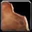
Rugged Leather127 Cured Rugged Hide103
Cured Rugged Hide103 Light Leather82
Light Leather82 Pristine Leather80
Pristine Leather80 Thick Leather75
Thick Leather75 Heavy Leather67
Heavy Leather67 Medium Leather54
Medium Leather54 Fel Leather50
Fel Leather50 Cured Light Hide49
Cured Light Hide49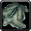
Cured Heavy Hide47 Cured Medium Hide45
Cured Medium Hide45 Pristine Hide43
Pristine Hide43 Cured Thick Hide41
Cured Thick Hide41 Enchanted Leather40
Enchanted Leather40 Heavy Scorpid Scale34
Heavy Scorpid Scale34 Deviate Scale12
Deviate Scale12 Pristine Scale12
Pristine Scale12 Black Dragonscale7
Black Dragonscale7- Scorpid Scale7
 Fel Hide6
Fel Hide6 Silithid Chitin6
Silithid Chitin6- Blue Dragonscale5
 Core Leather5
Core Leather5 Turtle Scale5
Turtle Scale5 Chimera Leather4
Chimera Leather4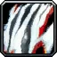
Frostsaber Leather4 Ironfeather4
Ironfeather4 Black Whelp Scale3
Black Whelp Scale3- Green Dragonscale3
 Heavy Silithid Carapace3
Heavy Silithid Carapace3 Light Silithid Carapace3
Light Silithid Carapace3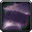
Primal Bat Leather3 Raptor Hide3
Raptor Hide3 Red Dragonscale3
Red Dragonscale3 Salt3
Salt3- Slimy Murloc Scale3
 Warbear Leather3
Warbear Leather3 Brilliant Chromatic Scale2
Brilliant Chromatic Scale2 Devilsaur Leather2
Devilsaur Leather2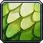
Green Whelp Scale2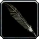
Jet Black Feather2- Perfect Deviate Scale2
 Primal Tiger Leather2
Primal Tiger Leather2- Scale of Onyxia2
- Shadowcat Hide2
- Thick Murloc Scale2
- Worn Dragonscale2
- Deeprock Salt1
- Dreamscale1
 Heavy Hide1
Heavy Hide1 Light Hide1
Light Hide1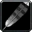
Long Tail Feather1 Medium Hide1
Medium Hide1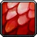
Red Whelp Scale1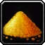
Refined Deeprock Salt1 Rugged Hide1
Rugged Hide1- Ruined Leather Scraps1
 Thick Hide1
Thick Hide1 Thick Wolfhide1
Thick Wolfhide1 Thin Kodo Leather1
Thin Kodo Leather1
Cloth — 15
 Rune Thread173
Rune Thread173 Fine Thread84
Fine Thread84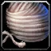
Coarse Thread55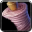
Heavy Silken Thread55- Silken Thread39
 Ironweb Spider Silk13
Ironweb Spider Silk13- Spider's Silk9
 Runecloth7
Runecloth7 Bolt of Silk Cloth3
Bolt of Silk Cloth3 Bolt of Woolen Cloth2
Bolt of Woolen Cloth2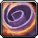
Bolt of Runecloth1 Felcloth1
Felcloth1 Mageweave Cloth1
Mageweave Cloth1 Mooncloth1
Mooncloth1- Thick Spider's Silk1
Elemental and enchanting materials — 16
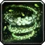
Malleable Essence of Nature40 Essence of Water18
Essence of Water18 Living Essence18
Living Essence18 Elemental Air15
Elemental Air15 Elemental Water15
Elemental Water15 Elemental Earth12
Elemental Earth12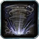
Essence of Air9 Essence of Fire9
Essence of Fire9 Essence of Earth8
Essence of Earth8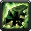
Core of Earth3 Dream Dust2
Dream Dust2 Soul Dust2
Soul Dust2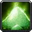
Strange Dust2 Vision Dust2
Vision Dust2 Globe of Water1
Globe of Water1 Heart of Fire1
Heart of Fire1
Engineering parts — 1
Thread, vials, dyes and other reagents — 31
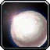
Iridescent Pearl15 Blue Dye12
Blue Dye12 Jade12
Jade12 Small Lustrous Pearl12
Small Lustrous Pearl12 Black Dye11
Black Dye11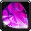
Shadowgem10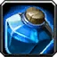
Cerulean Dye9 Citrine9
Citrine9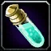
Sulfuric Acid9 Gray Dye8
Gray Dye8 Orange Dye8
Orange Dye8 Fiery Core6
Fiery Core6 Frozen Rune6
Frozen Rune6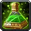
Larval Acid6 Lava Core6
Lava Core6 Bleach5
Bleach5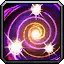
Powerful Mojo4 Black Pearl3
Black Pearl3 Green Dye3
Green Dye3 Huge Emerald3
Huge Emerald3- Flask of Big Mojo2
- Flask of Mojo2
 Large Fang2
Large Fang2 Azerothian Diamond1
Azerothian Diamond1 Blue Sapphire1
Blue Sapphire1 Large Opal1
Large Opal1 Moss Agate1
Moss Agate1 Ogre Tannin1
Ogre Tannin1 Simple Wood1
Simple Wood1 Stonescale Oil1
Stonescale Oil1 Wicked Claw1
Wicked Claw1
Items used as reagents — 31
 Elixir of Minor Fortitude9
Elixir of Minor Fortitude9 Shadow Oil3
Shadow Oil3 Heavy Armor Kit2
Heavy Armor Kit2 Medium Armor Kit2
Medium Armor Kit2 Rugged Armor Kit2
Rugged Armor Kit2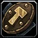
Thick Armor Kit2 Black Diamond1
Black Diamond1 Cindercloth Cloak1
Cindercloth Cloak1 Coarse Gorilla Hair1
Coarse Gorilla Hair1 Elixir of Agility1
Elixir of Agility1 Elixir of Defense1
Elixir of Defense1 Elixir of Giant Growth1
Elixir of Giant Growth1 Elixir of Greater Strength1
Elixir of Greater Strength1 Elixir of Lesser Agility1
Elixir of Lesser Agility1 Elixir of Lesser Defense1
Elixir of Lesser Defense1 Elixir of Minor Agility1
Elixir of Minor Agility1 Elixir of Minor Strength1
Elixir of Minor Strength1 Elixir of Ogre Strength1
Elixir of Ogre Strength1 Elixir of Wisdom1
Elixir of Wisdom1 Fine Leather Belt1
Fine Leather Belt1 Fine Leather Gloves1
Fine Leather Gloves1 Fine Leather Tunic1
Fine Leather Tunic1 Great Rage Potion1
Great Rage Potion1 Lesser Mana Potion1
Lesser Mana Potion1 Lucky Charm1
Lucky Charm1 Major Mana Potion1
Major Mana Potion1 Mana Potion1
Mana Potion1 Minor Mana Potion1
Minor Mana Potion1 Skin of Shadow1
Skin of Shadow1- Swiftness Potion1
 Undeath Engine1
Undeath Engine1
Reagents of each recipe · 508 recipes
Correction history
- 12 November 2026 (draft, not approved): first complete list of this profession’s recipes, from client-extracted data, marked “to be confirmed”. No publication.[4][1]
- 13 November 2026: “to be confirmed” removed from facts found in the game files (client 1.60.1.70862), t359u decision. Acquisition marked “unknown”, zones not given, sources without a build stamp, and inferred values remain to be confirmed. This is not an official Blizzard confirmation, and not a publication.[4] Game data (client 1.60.1.70862)
- 14 November 2026: internal links to already published sheets (bestiaries, recipe lists, dungeons) — v40 batch, t361u. No new facts.[1][2][3][4]
- 17 November 2026 (v42): added the “Materials: where to find them” section (reagents of each recipe, read from the game files, client 1.60.1.70862).[5] Game data (client 1.60.1.70862)
What is confirmed / what remains to be confirmed
Confirmed by official sources
Still to be confirmed
- Complete official list of recipes, materials, prices and named trainers: not published by Blizzard.
- For some recipes, acquisition, source or zone was not given in the data consulted; those cells stay as “not recorded”.
- Drop rates: not given in the data consulted, and not officially published.
Key dates
Sources
- [1] World of Warcraft: Forever Deep Dive Panel Recap (EN) · published · accessed
Récapitulatif de la présentation « Au cœur de World of Warcraft: Forever » (FR) · published · accessed - [2] Gather Around the Campfire in World of Warcraft: Forever (EN) · published · accessed
Retrouvez-vous autour d’un feu de camp dans World of Warcraft: Forever (FR) · published · accessed - [3] WoW: Forever Hotfixes - November 11, 2026 (EN) · published · accessed
- [4] Leatherworking profession guide — full recipe list (game data (client 1.60.1.70862) (EN) · no publication date shown · accessed
Guide Travail du cuir — liste des recettes (données du jeu (client 1.60.1.70862) (FR) · no publication date shown · accessed Game data — client 1.60.1.70862 - [5] WoW Forever client files, build 1.60.1.70862 — data tables and icons read from Blizzard’s official CDN (EN) · no publication date shown · accessed Game data — client 1.60.1.70862
Official Blizzard Entertainment sources (all rights reserved). This wiki offers an original synthesis; only short quotes are reproduced. Announced information may change before or after launch. Sources marked “game data” come from the WoW Forever client files (build 1.60.1.70862). This is not an official Blizzard confirmation.
Documentary version : World of Warcraft: Forever — annonces officielles et fichiers du jeu (client 1.60.1.70862), état documentaire 2026-11-17 · revision 17